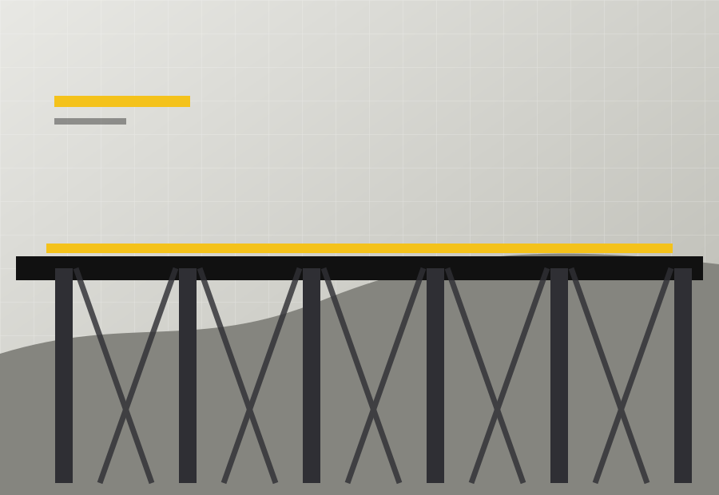
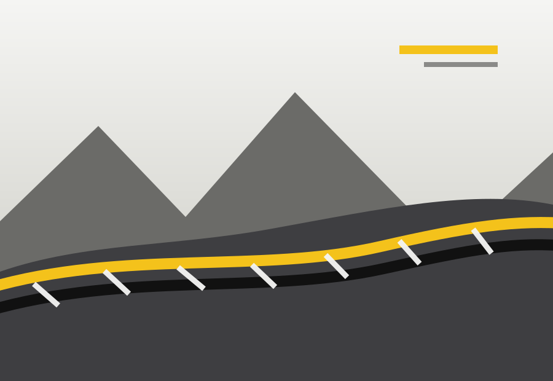
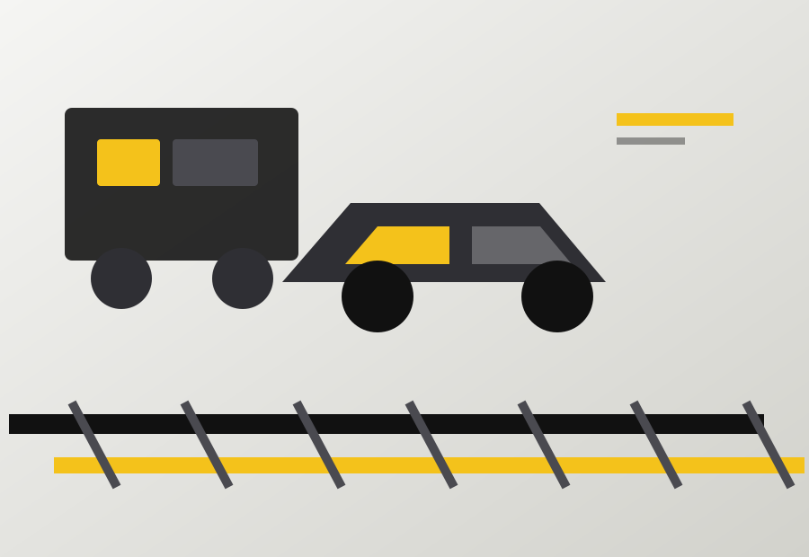
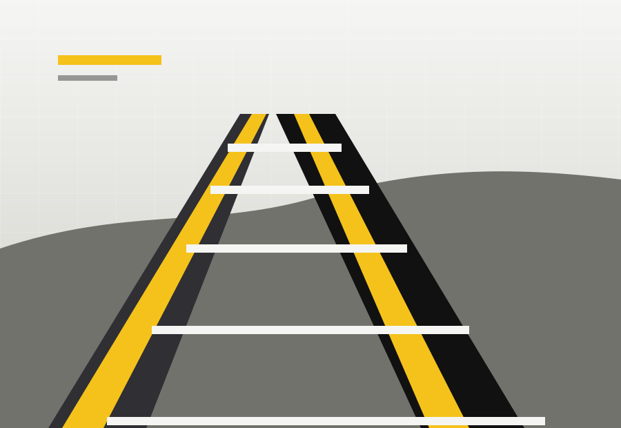

Excelência técnica
Metodologias de engenharia, controle de qualidade e padronização operacional para entregas de alto desempenho.
Soluções técnicas em infraestrutura ferroviária, manutenção, conservação e execução em campo com segurança operacional, precisão e compromisso com resultados.
Metodologias de engenharia, controle de qualidade e padronização operacional para entregas de alto desempenho.
Atuação preventiva, equipes treinadas e rotinas de campo orientadas à proteção de pessoas, ativos e operação.
Uso de dados, inspeções técnicas, indicadores operacionais e tecnologia para aumentar previsibilidade e eficiência.
Planejamento, produtividade e gestão de recursos para transformar estratégia em execução real no trecho ferroviário.
Governança, conformidade documental e comunicação objetiva com clientes, comunidades e parceiros estratégicos.
Projetos que reduzem desperdícios, preservam o entorno e contribuem para uma matriz logística mais eficiente.
Atuação voltada à expansão da infraestrutura brasileira, apoiando corredores logísticos, integração regional e crescimento econômico.
Integramos planejamento, engenharia de campo, controle de equipes, manutenção de via permanente, conservação estrutural e gestão de indicadores para garantir disponibilidade, segurança e performance em cada trecho atendido.
Sobre nósConservação de via permanente, substituição de componentes, correção geométrica, limpeza, inspeções operacionais e resposta técnica para preservar a disponibilidade da malha.
Obras civis, drenagem, contenções, viadutos, passagens, revitalizações e soluções de engenharia para expansão, modernização e recuperação de corredores ferroviários.

Projetos estruturais com foco em segurança, integração logística e precisão executiva.

Recuperação de trechos críticos em ambientes complexos e de alta exigência técnica.

Frentes de serviço integradas para inspeção, correção e conservação da malha.

Intervenções planejadas para elevar disponibilidade, confiabilidade e vida útil dos ativos.
Grade demonstrativa para substituição pelos logos reais da empresa.
Engenheiros, técnicos, operadores, líderes de campo e profissionais de segurança operacional encontram aqui projetos desafiadores e de impacto nacional.